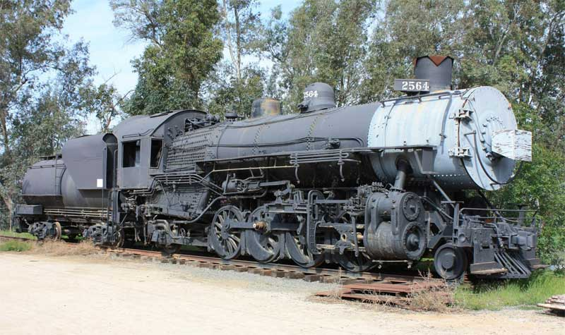

Last updated: 10 September, 2025
| Builder: | ALCO |
| Build #: | 62881 |
| Date: | 1921 |
| Engine #: | 2564 |
| Railroad: | Union Pacific |
| Website: | www.oerm.org |
| Email: | Contact Form. |
| Location: | Southern California Railway Museum, 2201 S. ‘A’ Street, Perris CA 92570 Formerly the Orange Empire Railway Museum. 2 |
| GPS: | 33.762199, -117.233948 Parking. |
| Phone: | |
| Status: | Display |
| Notes: | Acquired 1996. Weight of tender (loaded) is 187,460 pounds. |
Subject to change 1: | |
| Museum Hours: | Tuesday – Sunday, 0900-1700 Wednesday evenings: 1700-2200 |
| Museum Store: | Tuesday – Sunday, 0900-1630 Wednesdays 1330-2100 The Museum Store will be Closed for October 28th 2025 – January 2nd 2026 to accommodate their fall and winter event schedule. |
| Guided Tours: | Tuesday – Friday, 0900 – 1500 ($5/Person) Saturday by appointment only ($5/Person) |
| Train & Trolley Rides: | Saturdays, Sundays & Select Weekdays ($8-$13/Person) |
| Events with paid admission may affect times and prices. |
This engine was built by the American Locomotive Co. at their Brooks Works in Dunkirk, NY, in 1921. It was produced for the Union Pacific (UP) system, specifically for their subsidiary Los Angeles and Salt Lake (LA&SL) line. It was originally numbered LA&SL 3725, but renumbered LA&SL 2725 in 1922. Its original service was on the east end of the line, between Salt Lake City and Caliente, Nevada.
In 1923, the locomotive was traded within the Union Pacific system to another subsidiary, the Oregon Short Line (OSL), which renumbered the engine 2564. The OSL requested this type of locomotive because of its duplex coal stoker, which seemed to work better with their grade of coal. the engine then spent many years pulling long-haul freight and short-haul freight and passenger trains all over the Oregon Short Line, which actually extended from Oregon all through Idaho to Wyoming, with a branch into Nevada. (OSL was the connection between the UP's railroad lines in Oregon and Washington and the UP's main transcontinental system in Wyoming.) In the early 1940's the engine was rebuilt and fitted with disc main drivers, improved main rods, and a modified smoke box with a new "Sweeney" stack.
The railroad's conversion to more efficient diesel engines eventually relegated the UP 2564 to short-haul freight runs and seasonal yard switching. Around 1955, the locomotive was stored in serviceable condition in Pocatello, Idaho. It stayed their until 1959, when the Union Pacific donated the engine and its tender to a historical foundation, and placed them in a public park in Oro Grande, California. Thirty-seven years passed, during which this park became part of the San Bernardino County's park system.
In 1996, a required modernization of the park forced the removal of the locomotive, and the Museum acquired it from the county. In 1997, after months of preparation work, the engine and its tender were loaded onto large flatcars for transport to Perris. The locomotive has been evaluated for future restoration and stabilized to minimize deterioration while it is stored outdoors. As part of the stabilization process, the 2564 was painted in March 2004. At the present time, the priority for the OERM steam program is to return Ventura County No. 2 to regular service. Upon completion of the VC2 project, additional work is planned for the 2564. Major restoration work would, however, require a dedicated facility to be built on the Museum site that could support the heavy mechanical overhaul work on this relatively large steam locomotive.
| Class: | Mk-10 |
| Gauge: | 4'-8½" |
| F.M.Whyte: | 2-8-2 (Mikado) |
| Drivers: | 63 |
| Gear Ratio: | |
| Tractive Effort: | |
| Weight: | 300,000 |
| Weight on Drivers: | |
| Length: | |
| Boiler: | 210 |
| Cylinders: | 26x28 |
| Top Speed: | 63 |
| Horsepower: | 17 |
| Fuel: | |
| Fuel Type: | Soft Coal |
| Water: | 10,000 |
| Steam psi: |